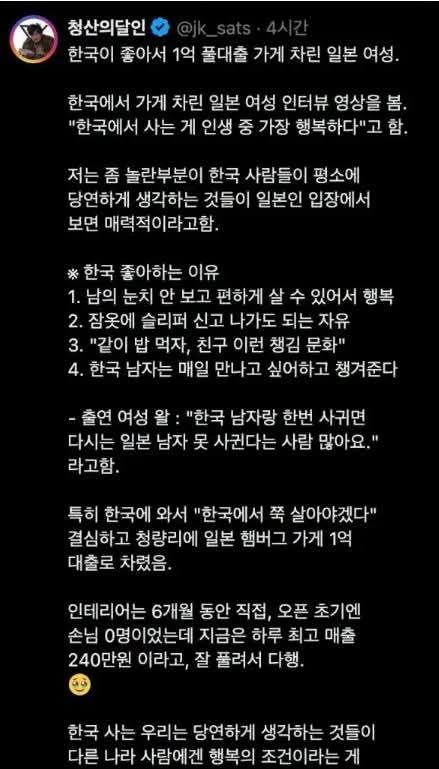

한국이 좋아서 1억 풀대출 가게 차린 일본 여성
댓글
차라리 페리시치 사형 이런 국뽕TV가 더 낫다ㅋㅋ 어제 러시아 여자가 한국 최고 하는것도 존나 버거웠는데
어딘가 했더니 이미 가본데네 전통시장 안쪽에 있어서 찾아가는 길이 좀 험난했음
맛은 어땠음? 가보려고 하는데
몇 달 되서 흐릿하긴 한데 나쁘지 않았던 것 같네 대표메뉴로 했는데 일식답게 달달했고.. 동대문구 근처면 와볼만하겠다 정도?
아 그리고 리뷰하면 주는 푸딩 디저트 있는데 같이 간 친구가 많이 칭찬하더라
근데 가게 안이 생각보다 좁고 테이블이 많이 없음 ㅋㅋ 4인테이블 2개에 2인테이블 3갠가 그정도 됐음
리뷰 땡큐 떙큥
사장님 예쁘심?
내가 본 사람이 사장님인진 모르겠는데 서빙해준 분이 한국어도 잘하셔서 좀 신기했음 안쪽에서 일본어로 떠드는 소리 들렸음
청량함박 그전엔 무슨 오리탕인가 국수집인가 염소탕인가 아무튼 엄청 낡은 가게였는데 지나가다 보기만 했던거 가볼까
청량리 저기서 살아남았으면 어디서든 살아남을수있음
온갖 인간군상이 모조리 모여있는 대한민국 인간 용광로임
부천, 주안, 안성 : ???
청량리는 ㄹㅇ임 부천애들도 저기가면 조용해짐
ㅋㅋ청량리역, 경동시장, 약재시장 맛을 안봤구나 아직
밤에 한 번 지나가 봤는데 진짜 무섭더라 ㅋㅋㅋ 경동시장 쪽 그냥 동네가..
거긴 젊은 사람들이잖아?
청량이는 나이든사람들이 주로 있음.
한대 픽 치면 바로 저승행..
근데 목소리는 또 엄청커..
큰것중 하나는 술먹고 길에 눕거나 노상방뇨를 아무곳이나 함.. ㅋㅋ
부천-> 양아치네
청량리->21세기가 맞나…
지하철에서 똥싸는 사람 본 적 있어?
제기동에서 청량리 넘어갈 때, 아직도 난 그 1호선의 위기보다 더 큰 위기를 만나본 적이 없다.
의정부, 가리봉, 안산원곡 : 청량리? 그녀석은 우리중 최약체지
청량리.. 10년전 전농동 마카나이 개맛있었는데..
거기 아직 있어
닉네임 '청산의달인' 이라길래 조선 매운맛 못 당하고 청산 당한 일본녀 생각하고 읽었는데
장기풍 유튭 채널에서 소개되고 잘 되네
존나 좋은 나라 맞긴 해
위치선정 떄문인진 몰라도 사람들이 좀 매콤하긴 하지만
남의.. 눈치를안봐?
저러면 영주권 나오나? 아님 계속 비자발급받아야하나
일본인 드립넷
2번은 1번땜에 그러는거? 남눈치보는것땜시?
나도 걍 순수 뇌피셜인데 일본은 여자들한테 좀 보수적인 시선있지않나
그래서 너무 껄렁한 차림으로 나가면 안되는거 아닐까? 대가리 굴려봄ㅋㅋ
어느정도 맞말이긴 할듯? 그 보수적인 시선에 반대하고 생긴게 갸루로 알고있는데
애초에 편의점 알바한테 의자가 있으면 바로 난리 치는 문화라 이해가긴 함.
알바가 감히 앉을 생각을 하냐는 거 보면 다른 것들도 만만치 않겠지
거기인가보다 그냥 청량리도 아니고 경동시장에 있는 함바그
ㄷㄷ.. 마다오무 성공했구나...
1번부터 이해가 안 가는데
한국만큼 눈치 많이 보는 나라도 없지 않나?....내가 잘못 알고 있나????
일본에 비하면 인가
다른나라 살아본적도 없으면서 세계에서 제일 눈치 많이 보느니, 제일 경쟁 많이하느니 ㅇㅈㄹ하더라 ㅋㅋㅋㅋㅋㅋㅋㅋㅋ
일본에 비하면 소중국이라곤 하더라 ㅋㅋ
눈치나 예의범절이나 공중도덕이나 등등 그런게 일본애들이 보기에 그냥 꼴리는데로 사는느낌이래
심지어 약간 양키같은 좀 양아치 같은애가 한말임 ㅋㅋㅋ
우리나라에서 그냥 평범한 남자면
일본애들이보기엔 씹테토 상남자인거임
청량리 함박스테이크집이면 내가 최근에 가봤는데 맛은 평타고 가격은 좀 비쌈. 청량리 그 자리에서 그 가격으로 장사하는거에 놀랐음.
셀프인테리어인거는 이거 보고 알았네. 테이블 간격도, 셀프바 위치도 그렇고 동선이 좀 이상하긴 했음. 높은 별점은 이벤트와 유튜브 유입일거임. 상호보면 알겠지만 맛으로 그 점수는 아님.
양 많은 음식 좋아하면 근처 청년몰 돈까스 특이 더 나은 선택.
함박은 수유 쪽이 찐임. 경대쪽도 괜찮고.
수유랑 경대 어디? 추천좀
수유 다래 회기 언니네
근데 외국인은 무슨비자로 어떻개 한국에서 창업해??
그게 가능한건가??
우리나라 사람도 일본가서 그냥 막 창업가능해?
일본창업도 되는데 이번에 자본금 3천만엔으로 올려서 뉴스도 나오더라 빡새졌다고
찾아보니깐 퀄이 상당히 좋네 ㄷㄷ 청량함박
한남죽어 외치는 페미는 도대체
그래도 씨발 나랑은 안사귈거잖아
점수개높네 카맵평점 4점대임 ㄷ